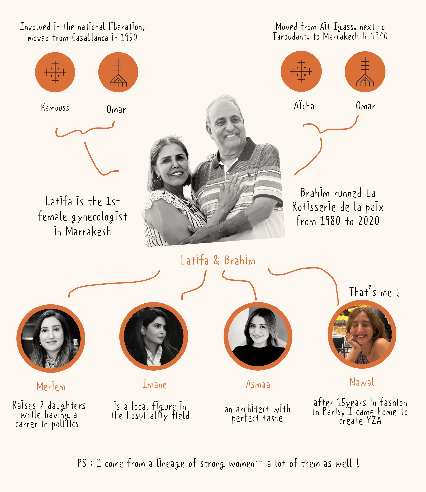
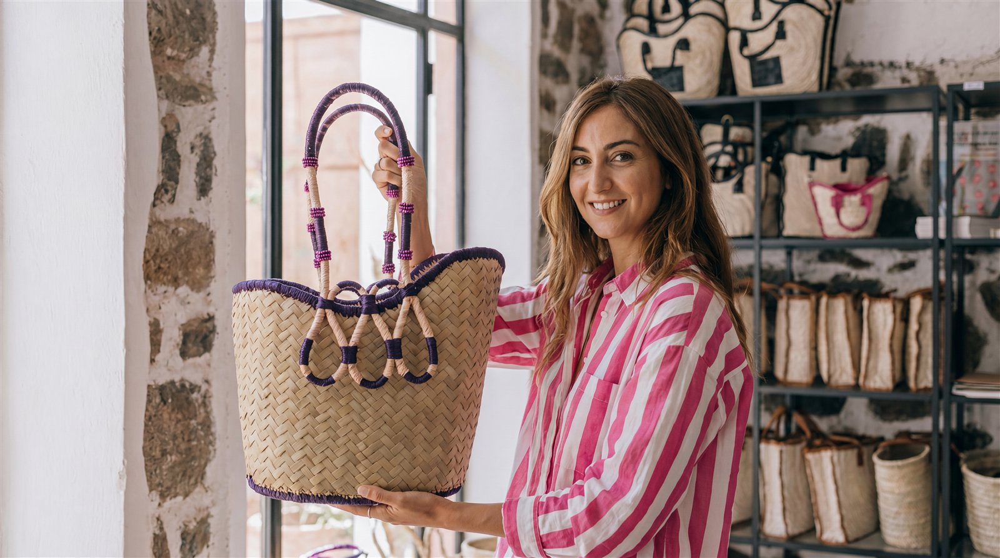

YZA / ⴰⵣⵉ / ييزة
Rooted in Marrakech,
Crafted for Everywhere
YZA, ⴰⵣⵉ, ييزة - an Amazigh girl's name, the one my grandmother might have called across a courtyard. It holds strength, resilience, and the road home. For me, YZA is less a label than a way of living - feminine, free, a little stubborn; close to the old ways, and unmistakably modern.
Women, craft, colour - born on one street in Guéliz, made by the hand in Marrakech. This is Modern Marrakech Wear™: small objects that carry a long story, made to keep, to wear, to pass to the next pair of hands. A story we write together.

Three Generations in Guéliz
It begins three generations ago, on a single street - from my father's restaurant, the Rôtisserie de la Paix, where the kitchen ran on instinct and feeding people, to YZA Studio today, a few doors down. The building dates to the 1940s - once the Keys Club bar, then the French cultural centre; the family took it on in 1990, and since 2025 it holds the studio. Guéliz is where we live, where we make, where we keep learning. Our roots run deep here - and what we hand down is the habit of making something by hand.


About the founder, Nawal Rmili
For nearly fifteen years I worked in Paris fashion - a stylist and assistant on shoots for Vogue, Glamour, Marie Claire, ID. I learned the eye, the rigour, the long days. But I kept reaching for colour, culture and connection - for something the hand could hold. So I came home to Marrakech and began YZA, my answer to a simple longing: more meaning in fashion. The aim isn't speed; it's intention. We design de tout petits objets qui portent une grande histoire - small things, made by the hand, made to last.

66 Rue Yougoslavie, Guéliz · Marrakech
A Women's Atelier in Marrakech
Every piece begins here - from raw thread to leather finish. Raffia, doum, banana leaf: the materials arrive rough and leave as finished objects, one at a time. No moulds. No shortcuts. Just hands, time, and 37 years of gesture in the room.




The Women of the Atelier
Fatima has been at this craft for 37 years. She reads raffia the way others read a page - by tension, density, the way the thread holds. Her hands know before she does.
Beside her, Lala Fatima hand-crafts the golden bead tassels and embroiders the Berber signs that mark every Jawhara piece as hers. What she makes cannot be replicated by a machine - not quite.
This atelier is 100% women-run. Every piece you carry supports specialised hands and a craft that takes decades to master.
The materials
Raffia, doum, banana leaf.
Three plant fibres, sourced and dried, handed to the atelier. Each bends differently, holds colour differently, ages differently. The weavers know by touch - which strand for a base, which for a handle edge, how tight to pull to hold shape for years.
A leather finish at every edge where a bag wears hardest. Slow work. Made to outlast fast fashion by a decade.

Come to the Studio
The studio is open to visitors. Come see the work in progress - bags mid-weave, artisans at the bench - and bring a piece home directly from the hands that made it.

Monday 12h - 16h · Tuesday closed
Wednesday - Sunday 12h - 20h
Our Manifesto
- We are Modern Marrakech Wear™.
- We take the everyday pieces of the local wardrobe and make them new.
- We trust simplicity - and find, in it, the quiet kind of beauty.
- We honour heritage: its techniques, its stories, its streets.
- More hands, fewer machines, less waste, more meaning.
- We choose the hand over the machine, the made over the made-fast.
- We design with time, and we make from the heart.
- Colour is culture. Craft is language.
- We grow through women - those who make, those who wear, those who pass it on.
- Beauty lives in community - in connection, in lineage, in the making.
Life is more colorful in Marrakech.